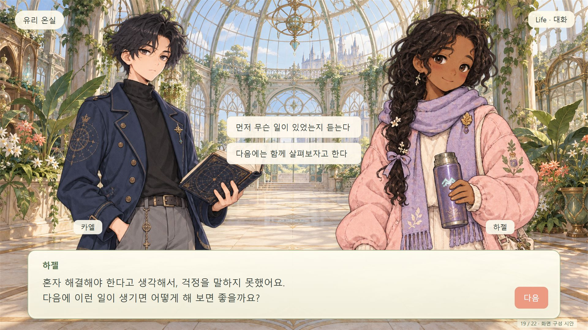
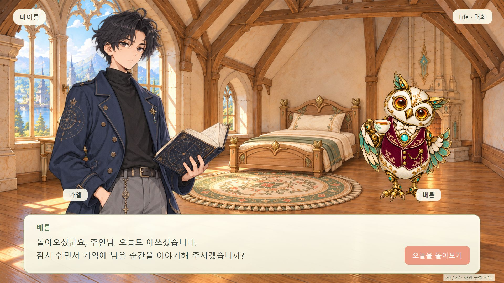

<!doctype html><html lang="ko"><meta charset="utf-8"><meta name="viewport" content="width=device-width"><title>라이프 상반신 구도 · 두 시안</title><style>body{margin:24px;background:#eee9db;color:#354139;font:18px 'Malgun Gothic',sans-serif}main{max-width:1440px;margin:auto}img{width:100%;display:block;border-radius:12px;margin:12px 0 32px}a{color:#486b50}</style><main><h1>라이프 · 상반신 대화 구도</h1><p>기존 원화 재사용 · 1920×1080 · 19번과 20번만 수정</p><h2>19 · 이야기 선택</h2><a href="screen_mockups_flow_preview_015.html#19">선택지를 눌러 보기</a><h2>20 · 마이룸</h2><a href="screen_mockups_flow_preview_015.html#20">마이룸 대화 보기</a></main></html>
